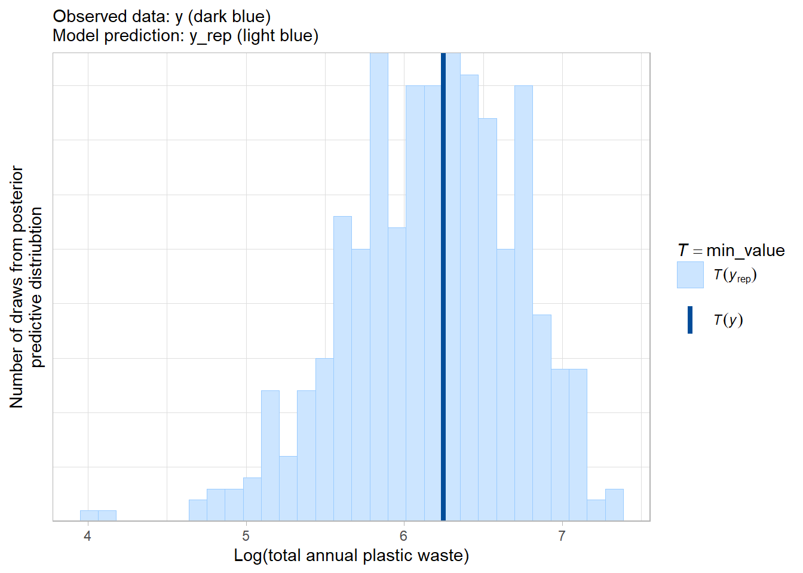

Chapter 2 Predicting the amount of plastic waste a country produces each year
# core libraries
library(tidyverse)
library(rstanarm)
# helper packages
library(janitor) # for clean names
library(bayesplot) # posterior predictive graphic checks
# global settings
theme_set(theme_light())In this notebook I try out and apply some of the concepts, tools and techniques I have been learning as I read through the excellent Regression and Other Stories. To do this I needed a dataset to work with. I decided to work with some data I had found (via #TidyTuesday) on how much plastic waste countries produce. So with this dataset to hand, my more specific aims were to:
To develop a simple (Bayesian) regression model to predict the amount of plastic waste created by a country;
To use appropriate metrics to compare the performance of several regression models;
To use a simple regression to predict ‘future’ plastic waste production.
In his introductory section (1), I add a few reflections on what I learnt throughout the process of working with the plastic waste data and developing a simple regression model. The following sections of the notebook then address in turn (2) data import, (3) data cleaning, (4) exploratory data analysis, (5) model fitting and evaluation, and (6) applying the model to make predictions.
It quickly became clear to me that I was probably not actually working with observed data of how much plastic waste countries had produced in 2011. Rather I was actually working with the outputs of model which estimated how much plastic waste countries had produced in 2011. So, in a very simplistic way I was actually trying to recreate a model developed by a team of researchers (Jambeck et al. 2015) probably over the course of months and months of work.
Fortunately, I had not read the paper detailing the construction of the model I was in effect trying to recreate. If I had read it I would have known in advance too much about the predictors to use, which in turn might well have reduced my opportunities for learning.
The simple two predictor model developed in this notebook used a countries population and GDP to estimate it’s annual plastic waste production. Disappointingly, the model developed performed badly when attempting to make predictions for countries which produce large amounts of plastic waste. However, the process of developing the model provided a great opportunity for me to develop more hand-on experience of the practicalities of regression modeling.
The next steps to developing a more nuanced and hopefully more effective model for predicting a country’s annual plastic waste production would be to review approaches used to developing plastic waste models by Jambeck et al. 2015 and other researchers. This would hopefully provide me with greater insights into which variables (beyond population and GDP) would be helpful in estimating a country’s annual plastic waste production.
The dataset used:
All data files are located in /data/
| File Name | Variable name in this notebook | Notes |
|---|---|---|
| ‘../data/waste_vs_gdp.csv’ | waste_vs_gdp* |
|
2.1 Data importing
The data was provided by #TidyTuesday, a collaborative weekly data science project run the R for Data Science Community. Each week a dataset is posted for data scientists to practice their data wrangling and visualisation skills. In May 2019 #TidyTuesday posted three datasets (sourced from our world in data) providing three datasets focussing on plastic waste production, coastal populations and economic activity. The data is provided (mainly) at the country scale.
In this analysis I work with only one of the three datasets. Below I read in the dataset relating to plastic waste production and GDP and quickly clean up some of the variable names to make them easier to work with.
# read dataset
waste_vs_gdp <- read_csv('data/waste_vs_gdp.csv') %>%
clean_names() %>%
rename(country = entity,
country_code = code,
population = total_population_gapminder,
gdp_per_cap =
gdp_per_capita_ppp_constant_2011_international_constant_2011_international,
plastic_waste_per_cap =
per_capita_plastic_waste_kilograms_per_person_per_day)2.2 Data cleaning
2.2.1 Missing data
I started the analysis with the idea that there could be relationship between the amount of plastic waste produced by a country and the size of its economy. So, I focused on just one of the three #TidyTuesday datasets waste_vs_gdp.
# show data for initial inspection
waste_vs_gdp## # A tibble: 22,204 x 6
## country country_code year plastic_waste_per_cap gdp_per_cap population
## <chr> <chr> <dbl> <dbl> <dbl> <dbl>
## 1 Afghanistan AFG 1800 NA NA 3280000
## 2 Afghanistan AFG 1820 NA NA 3280000
## 3 Afghanistan AFG 1870 NA NA 4207000
## 4 Afghanistan AFG 1913 NA NA 5730000
## 5 Afghanistan AFG 1950 NA NA 8151455
## 6 Afghanistan AFG 1951 NA NA 8276820
## 7 Afghanistan AFG 1952 NA NA 8407148
## 8 Afghanistan AFG 1953 NA NA 8542906
## 9 Afghanistan AFG 1954 NA NA 8684494
## 10 Afghanistan AFG 1955 NA NA 8832253
## # ... with 22,194 more rows# visualise missing data across variables
waste_vs_gdp %>%
arrange(country, year) %>%
visdat::vis_dat()Quickly looking at the data and plot above:
I am happy the data types for each variable are appropriate and that the variables look to be in tidy format.
I can see that it is presented as a longitudinal dataset with each row consisting of an observation for a country (or another entity - e.g. a group of countries) for a specific year.
However, the variable I am interesting in predicting (plastic waste) most of the data is missing …
There is data on plastic waste production for 2010 (see below). So, data for other years can be removed.
# find out what plastic waste data is actually available
waste_vs_gdp %>%
filter(!is.na(plastic_waste_per_cap)) %>%
distinct(year)## # A tibble: 1 x 1
## year
## <dbl>
## 1 2010# remove observations where there is no plastic waste data available
waste_vs_gdp_cleaned <- waste_vs_gdp %>%
filter(!is.na(plastic_waste_per_cap))Taking another at the missing data (just for the year 2010):
I can see there is some missing data for
gdp_per_cap. I’m thinking that this variable will be used as a predictor later on in a linear regression model, so I looked at the missing data in a more detail.Based on a quick inspect, the 38 entities without
gdp_per_capdata (see below) look to fall into two categories:small dependencies, territories and islands which form part of larger countries, for example Gibraltar which is part of the UK.
countries where is it might be difficult to quantify GDP, for example North Korea and Cuba.
Although, it means losing approximately 20% of the dataset I think the best option is to omit these countries from the analysis. As at the moment I can’t think of a way to reliably impute GDP values for these 38 entities (particularly as they may have different economic characteristics from typical larger countries).
# look again at where things are at in terms of missing data
waste_vs_gdp_cleaned %>%
visdat::vis_miss()# check which countries/entities have no GDP data
waste_vs_gdp_cleaned %>%
filter(is.na(gdp_per_cap)) %>%
distinct(country, country_code)## # A tibble: 38 x 2
## country country_code
## <chr> <chr>
## 1 Anguilla AIA
## 2 Aruba ABW
## 3 British Virgin Islands VGB
## 4 Cayman Islands CYM
## 5 Channel Islands OWID_CIS
## 6 Christmas Island CXR
## 7 Cocos Islands CCK
## 8 Cook Islands COK
## 9 Cuba CUB
## 10 Curacao CUW
## # ... with 28 more rows# remove countries with no GDP data
waste_vs_gdp_cleaned <- waste_vs_gdp_cleaned %>%
filter(!is.na(gdp_per_cap))So, looking for the last time at missing data there is just the missing data for population to consider:
- As it is just three countries without population data I am comfortable with omitting these from the analysis.
# look again at where things are at in terms of missing data
waste_vs_gdp_cleaned %>%
visdat::vis_miss()# check which entities/countries don't have population data
waste_vs_gdp_cleaned %>%
filter(is.na(population)) %>%
distinct(country, country_code)## # A tibble: 3 x 2
## country country_code
## <chr> <chr>
## 1 Micronesia (country) FSM
## 2 Palestine PSE
## 3 Yemen YEM# remove observations without population information
waste_vs_gdp_cleaned <- waste_vs_gdp_cleaned %>%
filter(!is.na(population))2.2.2 Inspecting the data for the country variable
Given the raw data used the variable name (geographic) entity rather than country I wanted to check that the cleaned data only contains countries. Given there are only 145 observations remaining in the dataset, I did this check manually. There were no obvious non-country entities (e.g. continents such as Europe or Asia, or high/middle/low income country groups) remaining.
# confirm there are no non-country entities within the dataset
waste_vs_gdp_cleaned %>%
select(country, country_code)## # A tibble: 145 x 2
## country country_code
## <chr> <chr>
## 1 Albania ALB
## 2 Algeria DZA
## 3 Angola AGO
## 4 Antigua and Barbuda ATG
## 5 Argentina ARG
## 6 Australia AUS
## 7 Bahamas BHS
## 8 Bahrain BHR
## 9 Bangladesh BGD
## 10 Barbados BRB
## # ... with 135 more rowsI also confirmed there are no duplicates of countries within the dataset.
# confirm there are no duplicate countries
assertthat::are_equal(nrow(waste_vs_gdp_cleaned),
nrow(waste_vs_gdp_cleaned %>%
distinct(country))
)## [1] TRUE2.3 Exploratory data analysis
The plastic waste and gdp data are represented on a per capita basis (plastic_waste_per_cap and gdp_per_cap respectively). During the modelling process I think it will be useful to have the absolute values for plastic waste and gdp. Fortunately, population data is provide so it is easy to calculate these figures.
Having calculated plastic_waste_tot, I think it make sense to adjust the units to tonnes of waste per year (plastic_waste_per_cap was in kg per day per person). Just to confirm that the transformation I sum plastic_waste_tot to give global plastic waste for 2010 (which is approx. 269 million tonnes ). This is close enough to the headline figure of 275 million tonnes of global plastic waste for 2010 given by Jambeck et al. (), to be confident nothing major has gone wrong in my calculation.
# create new variables for eda and regression
waste_vs_gdp_eda <- waste_vs_gdp_cleaned %>%
mutate(plastic_waste_tot = plastic_waste_per_cap * population,
gdp = gdp_per_cap * population,
# adjust units
plastic_waste_tot = (plastic_waste_tot / 1000) * 365
)
# calculate global plastic waste total
waste_vs_gdp_eda %>%
summarise(sum(plastic_waste_tot)) %>%
pull()## [1] 268899757From the summary statistics (see below) for the outcome variable (plastic_waste_tot) and the two potential predictor variables (gdp and population), it looks like all three will be heavily right-skewed. And, this is confirmed by the plots below which apply a log scale to the x axis.
So, I start with a little bit of very basic feature engineering and take logs of the three variables to produce outcome and predictors with more normal-like distributions.
# produce summary statistics
waste_vs_gdp_eda %>%
select(-year) %>%
skimr::skim() %>%
skimr::yank("numeric")Variable type: numeric
| skim_variable | n_missing | complete_rate | mean | sd | p0 | p25 | p50 | p75 | p100 | hist |
|---|---|---|---|---|---|---|---|---|---|---|
| plastic_waste_per_cap | 0 | 1 | 2.000000e-01 | 3.100000e-01 | 0.01 | 9.000000e-02 | 1.400000e-01 | 2.200000e-01 | 3.600000e+00 | ▇▁▁▁▁ |
| gdp_per_cap | 0 | 1 | 1.924042e+04 | 2.018923e+04 | 660.21 | 4.984190e+03 | 1.212384e+04 | 2.922199e+04 | 1.251408e+05 | ▇▂▁▁▁ |
| population | 0 | 1 | 4.338416e+07 | 1.546056e+08 | 9827.00 | 1.341140e+06 | 6.192993e+06 | 3.167159e+07 | 1.341335e+09 | ▇▁▁▁▁ |
| plastic_waste_tot | 0 | 1 | 1.854481e+06 | 6.075795e+06 | 516.51 | 6.079521e+04 | 3.322850e+05 | 1.355185e+06 | 5.924007e+07 | ▇▁▁▁▁ |
| gdp | 0 | 1 | 5.966166e+11 | 1.805967e+12 | 29347842.73 | 1.247826e+10 | 6.955141e+10 | 3.872508e+11 | 1.532495e+13 | ▇▁▁▁▁ |
# define labels for plotting
x_lab_pop <- "Plastic waste produced (tonnes per year)"
x_lab_gdp <- "\n2010 GDP (USD)\n\nadjusted for inflation (2011 benchmark year) and purchaing power parity"
y_lab <- "Number of countries"
caption_lab <- "Source: ourworldindata / gapminder"
# plot histograms for the two predictors and the outcome
p <- ggplot(waste_vs_gdp_eda)
p + geom_histogram(aes(plastic_waste_tot), colour = "black") +
scale_x_log10(labels = scales::comma) +
labs(x = x_lab_pop,
y = y_lab,
caption = caption_lab )p + geom_histogram(aes(gdp), colour = "black") +
scale_x_log10(labels = scales::label_number_si(accuracy=0.1)) +
labs(x = x_lab_gdp,
y = y_lab,
caption = caption_lab)p + geom_histogram(aes(population), colour = "black") +
scale_x_log10(labels = scales::comma) +
labs(x = "Population",
y = y_lab,
caption = caption_lab)# log transform skewed variables
waste_vs_gdp_eda <- waste_vs_gdp_eda %>%
mutate(across(.cols = population:gdp,
.fns = log,
.names = "log_{.col}")
)There is a high degree of correlation between the logs each of the predictor variables (population and gdp) and the log of the outcome variable (plastic_waste_tot)(see below). This is promising in terms of developing a predictive linear regression model).
However, there is also evidence of multicollinearity (i.e. a high degree of correlation between the two predictor variable). If both are included in a linear regression model there is the potential for standard errors of the regression coefficients to increase (relative to a model containing only one of the two predictors). This is something to come back to in the comparision of model performance below.
# pair plot to review correlation between predictors and outcome variables
GGally::ggpairs(waste_vs_gdp_eda %>% select(starts_with("log_")))2.4 Modelling: A simple regression model
2.4.1 Model fitting
Below I fit three linear models (using a Bayesian linear regression algorithm from the rstanarm package) with plastic_waste_tot as the outcome variable. The three models have different predictors as follows:
Using
gdpas a single predictor;Using
populationas a single predictor;Using both
gdpandpopulationas predictors.
Reviewing the outputs of the three model fits I noted the following:
The residual standard deviation (sigma in the output below) is highest for model 1 and lowest for model 3.
The uncertainty around the values of the regression coefficients (MAD_SD in the output below) is smallest for model 2.
Below I explore these two points further by visualising the residuals and the uncertainty around the regression coefficients.
# reassign data at the start of modelling section
waste_vs_gdp_mod <- waste_vs_gdp_eda
# fit models
lm_1 <- stan_glm(formula = log_plastic_waste_tot ~ log_gdp,
data = waste_vs_gdp_mod,
refresh = 0)
lm_2 <- update(lm_1, formula = log_plastic_waste_tot ~ log_population)
lm_3 <- update(lm_1, formula = log_plastic_waste_tot ~ log_gdp + log_population)
# display model outputs
lm_1## stan_glm
## family: gaussian [identity]
## formula: log_plastic_waste_tot ~ log_gdp
## observations: 145
## predictors: 2
## ------
## Median MAD_SD
## (Intercept) -7.1 0.7
## log_gdp 0.8 0.0
##
## Auxiliary parameter(s):
## Median MAD_SD
## sigma 0.9 0.1
##
## ------
## * For help interpreting the printed output see ?print.stanreg
## * For info on the priors used see ?prior_summary.stanreglm_2## stan_glm
## family: gaussian [identity]
## formula: log_plastic_waste_tot ~ log_population
## observations: 145
## predictors: 2
## ------
## Median MAD_SD
## (Intercept) -1.3 0.5
## log_population 0.9 0.0
##
## Auxiliary parameter(s):
## Median MAD_SD
## sigma 0.8 0.0
##
## ------
## * For help interpreting the printed output see ?print.stanreg
## * For info on the priors used see ?prior_summary.stanreglm_3## stan_glm
## family: gaussian [identity]
## formula: log_plastic_waste_tot ~ log_gdp + log_population
## observations: 145
## predictors: 3
## ------
## Median MAD_SD
## (Intercept) -4.8 0.6
## log_gdp 0.4 0.0
## log_population 0.5 0.1
##
## Auxiliary parameter(s):
## Median MAD_SD
## sigma 0.7 0.0
##
## ------
## * For help interpreting the printed output see ?print.stanreg
## * For info on the priors used see ?prior_summary.stanreg2.4.2 Uncertainty in the model fit
For the first two models (those with just a single continuous predictor) it is straight-forward to plot the regression line alongside the raw data. The uncertainty associated with the regression line was added by plotting randomly sampled draws from the posterior distribution (for the regression coefficients).
For both these simple single predictor models a good fit between the model and the data can be observed. Additionally the uncertainty around the intercept and gradient terms of the regression line appears to be relatively limited.
# define a function for plotting a regression line with
# draws from posterior distribution
plot_lm_with_uncertainty <- function(model, data, x, y){
lm_coef <- coef(model)
# sample draws from the posterior distribution
posterior_coef_draws <- as_tibble(model) %>%
rename(a = `(Intercept)`,
b = {{x}}) %>%
sample_n(100)
# produce regression plot (including uncertainty)
ggplot(data,
aes({{x}}, {{y}})) +
geom_point() +
geom_abline(data = posterior_coef_draws,
mapping = aes(intercept = a,
slope = b),
colour = 'skyblue',
alpha = 0.3, size = 0.2) + # a sample of posterior to show uncertainty
geom_abline(intercept = lm_coef[1], slope = lm_coef[2],
size = 1) # estimated regression line
}
# Produce plots of fitted model (+ uncertainty)
plot_lm_with_uncertainty(lm_1, waste_vs_gdp_mod,
log_gdp, log_plastic_waste_tot) +
labs(x = "Log GDP",
y = "Log total annual plastic waste",
subtitle = "lm_1 (log_plastic_waste_tot ~ log_gdp)")plot_lm_with_uncertainty(lm_2, waste_vs_gdp_mod,
log_population, log_plastic_waste_tot) +
labs(x = "Log Population",
y = "Log total annual plastic waste",
subtitle = "lm_2 (log_plastic_waste_tot ~ log_population)")Additionally, I quickly looked at the uncertainty around the parameters of each of three the models (i.e. uncertainty around the intercept, and the coefficients for the predictor/s). See plots below, where the point represents the central estimate for the parameter, and the thick dark blue line represents a 50% uncertainty interval and the thin blue line a 90% uncertainty interval. Reviewing the plots for the three models I noted that:
In all the models there is very little uncertainty associated with the co-efficents of the predictor variable/s.
So, the uncertainty around the parameterisation of each model is effectively restricted to uncertainty around the value of the intercept of the regression line.
# define a function for producing plots of model parameter uncertainty
plot_coef_uncertainty_int <- function(mod, ...){
# process posterior for interval plots
posterior <- as.array(mod)
# plot uncertainty around model parameters
mcmc_intervals(posterior, ...)
}
# produce plots of model parameter uncertainty
plot_coef_uncertainty_int(lm_1, pars = c("(Intercept)", "log_gdp")) +
labs(subtitle = "lm_1 (log_plastic_waste_tot ~ log_gdp)")plot_coef_uncertainty_int(lm_2, pars = c("(Intercept)", "log_population")) +
labs(subtitle = "lm_2 (log_plastic_waste_tot ~ log_population)")plot_coef_uncertainty_int(lm_3, pars = c("(Intercept)", "log_gdp",
"log_population")) +
labs(subtitle = "lm_3 (log_plastic_waste_tot ~ log_gdp + log_population)")2.4.3 Reviewing the residuals
Looking at the residuals for each of the three models (see below) a similar pattern is present. As the amount of plastic waste produced by a country grows so do the residuals. In all three models the residuals diverge from 0 from predictions of approximately 0.5 million tonnes of plastic per year upwards. This suggest that for countries producing larger amounts of plastic the models are
# set theme again as seemed to be getting forgetten for some reason
theme_set(theme_light())
# calculate residuals
residuals <- waste_vs_gdp_mod %>%
mutate(pred_lm_1 = exp(predict(lm_1)),
pred_lm_2 = exp(predict(lm_2)),
pred_lm_3 = exp(predict(lm_3))) %>%
select(plastic_waste_tot,
starts_with("pred_")) %>%
mutate(resid_lm_1 = plastic_waste_tot - pred_lm_1,
resid_lm_2 = plastic_waste_tot - pred_lm_2,
resid_lm_3 = plastic_waste_tot - pred_lm_3)
# define residual plotting functions
plot_residuals <- function(data, x, y, ...){
ggplot(residuals,
aes({{x}}, {{y}})) +
geom_hline(yintercept = 0, colour = "grey50") +
geom_point() +
scale_x_log10(labels = scales::comma) +
#coord_cartesian(ylim = c(-4.25e7, 4.25e7)) +
labs(y = "Residual\n(Tonnes of plastic waster per year)")
}
plot_residuals(residuals, pred_lm_1, resid_lm_1) +
labs(x = "predicted value",
subtitle = "lm_1 (log_plastic_waste_tot ~ log_gdp)")plot_residuals(residuals, pred_lm_2, resid_lm_2) +
labs(x = "predicted value",
subtitle = "lm_2 (log_plastic_waste_tot ~ log_population)")plot_residuals(residuals, pred_lm_3, resid_lm_3) +
labs(x = "predicted value",
subtitle = "lm_3 (log_plastic_waste_tot ~ log_gdp + log_population)")I was wondering if the trend above would remain if I plotted the residuals as a proportion of the observed value (see below). This allowed me to get a sense of the errors in the models accounting for the wide variation in the amounts of plastic waste produced by the countries in the dataset (ranging from below 1000 tonnes per year to over 10 million tonnes). There is some indication in the plots below that all three of the models perform better for countries producing small amounts of plastic waste and worse for countries producing large amounts. However, the trend is less pronounced than in the plots of the raw residuals.
#define a function for plotting residuals as a proportion of observed values
plot_residuals_perc <- function(data, x, y, ...){
ggplot(residuals,
aes({{x}}, {{y}} / plastic_waste_tot)) +
geom_hline(yintercept = 0, colour = "grey50") +
geom_point() +
scale_x_log10(labels = scales::comma) +
labs(y = "Residual / observed value")
}
# plot residuals as a proportion of observed values
plot_residuals_perc(residuals, pred_lm_1, resid_lm_1) +
labs(x = "predicted value",
subtitle = "lm_1 (log_plastic_waste_tot ~ log_gdp)")plot_residuals_perc(residuals, pred_lm_2, resid_lm_2) +
labs(x = "predicted value",
subtitle = "lm_1 (log_plastic_waste_tot ~ log_population)")plot_residuals_perc(residuals, pred_lm_3, resid_lm_3) +
labs(x = "predicted value",
subtitle = "lm_1 (log_plastic_waste_tot ~ log_gdp + log_population)")2.4.4 Bayesian R squared
Next I took a look at the R2 values for each of three models. Just to note as this is a Bayesian regression analysis, the calculation of R2 is slight different from the standard (frequentist) calculation. Bayesian R2 is defined as:
\(\frac{\text{Explained Variance}}{\text{Explained Variance + Residual Variance}} = \frac{var_{fit}}{var_{fit} + var_{res}}\)
The table below shows the model three (including both gdp and population as predictors) has the largest R2 value and hence explain more of the variance in the dataset than the other two models.
In histograms showing draws from the posterior distribution of Bayesian R2 there are some overlaps between the lower tail of model 3, and the upper tails of models 1 and 2. I’ll leave formal analysis of confidence intervals for the R2 values, as these overlaps appear to be relatively small.
# display Bayesian R2 values for the three models
tribble(
~model, ~r2,
1, median(bayes_R2(lm_1)),
2, median(bayes_R2(lm_2)),
3, median(bayes_R2(lm_3))
) %>%
kableExtra::kbl() %>%
kableExtra::kable_styling()| model | r2 |
|---|---|
| 1 | 0.8499685 |
| 2 | 0.8701244 |
| 3 | 0.9089521 |
# define r2 plots
plot_bayes_r2 <- function(mod){
bayes_R2(mod) %>%
as_tibble() %>%
ggplot(aes(value)) +
geom_histogram(colour = "black") +
geom_vline(aes(xintercept = median(value)),
colour = "black", size = 2) +
labs(x = "Bayesian R Squared",
y = "Number of draws from posterior") +
theme_light()
}
# produce plots for the three models
plot_bayes_r2(lm_1) +
labs(subtitle = "lm_1 (log_plastic_waste_tot ~ log_gdp)")plot_bayes_r2(lm_2) +
labs(subtitle = "lm_2 (log_plastic_waste_tot ~ log_population)")plot_bayes_r2(lm_3) +
labs(subtitle = "lm_3 (log_plastic_waste_tot ~ log_gdp + log_population")2.4.5 Cross validation and log scores
To assess the likely relative performance of the three models on out-of-sample data I ran LOO (leave-one-out) cross-validation for each model. The accuracy of the each models predictions across the cross validations was compared using log scores. The output of the log score comparison (see below) shows that model 3 (including gdp and population as predictors) offered the best performance. With model 1 (only gdp as a predictor) offering the worst performance of the three models. The relative performance of the models in cross validation is the same could be see above when considering the residual standard deviation and R2 values for each model. So, we can be relatively confident that model 3 is the best performing of the three simple models.
# run loo cross validation
loo_1 <- loo(lm_1)
loo_2 <- loo(lm_2)
loo_3 <- loo(lm_3)
# compare performance of model using log scores
loo_compare(loo_1, loo_2, loo_3)## elpd_diff se_diff
## lm_3 0.0 0.0
## lm_2 -24.6 8.3
## lm_1 -35.2 9.02.4.6 Graphical posterior predictive checks
Focusing now just on the model that performed best in the leave-one-out cross-validation tests above (model 3 - which includes the two predictors gdp and population). I completed some basic graphical posterior predictive checks. The idea behind these checks is that a model that is performing reasonable well should be able to produce data with a distribution that reasonably closely resembles the distribution of the observed (i.e. in-sample data).
The plot below shows the density estimate for observed values of (log) total annual plastic waste in dark blue (labeled as y). Also shown (in light blue) are density estimates for predicted values of (log) total annual plastic waste. 75 randomly selected draws from the posterior distribution of regression coefficients (labeled as yrep) are shown to give a sense of the uncertainty in the model predictions.
This visual comparison shows that the density of observed values has a broader, wider peak than the model values. So, in effect the model is pushing prediction toward the center of the distribution a bit too much. If I was performing a more in-depth study it would be worth exploring further if the model could be developed further to produce predictions with a distribution more closely resembling the observed values.
# prepare vectors for using bayesplot functions
y <- waste_vs_gdp_mod$log_plastic_waste_tot # observed values of y
y_rep <- posterior_predict(lm_3, draws = 500) # predicted values of v
# for 500 draws from the posterior
# confirm dimensions are as expected
dim(y_rep)## [1] 500 145# plot
color_scheme_set("brightblue")
ppc_dens_overlay(y,
# sample 50 rows of matrix at random
y_rep[sample(nrow(y_rep), size = 75),]) +
labs(x = "Log total annual plastic waste",
y = "Density estimate",
subtitle = "Observed data: y (dark blue)\nModel prediction: y_rep (light blue)")
To understand in a little more details how the model is performing I looked at three test statistics (the median, maximum and minimum values). For each statistic the observed value (shown as a single vertical line, labeled T(y)) is overlaid on a histogram showing the predicted values produced by a sample of draws from the posterior predictive. Reviewing the three plots for the three test statistics I noted:
The observed test statistics values are approximately in the center of the distributions of test statistics produced by the model. So, the model is predicting median, min and maximum values fairly accurately.
However, the observed maximum is slightly displaced from the center of the distribution produced by the model. Suggesting that model has a tendency to under-predict for countries where the largest amount of plastic waste are produced.
# define a function for adding standard labels to test statistic plots
test_stat_labs <- function(){
list(labs(x = "Log(total annual plastic waste)",
y = "Number of draws from posterior\npredictive distriubtion",
subtitle = "Observed data: y (dark blue)\nModel prediction: y_rep (light blue)"))
}
# define functions for test statistics
max_value <- function(x) max(x)
min_value <- function(x) min(x)
median_value <- function(x) median(x)
# plot districutions of test statistics
ppc_stat(y, y_rep, stat = median_value) +
test_stat_labs()ppc_stat(y, y_rep, stat = max_value) +
test_stat_labs()ppc_stat(y, y_rep, stat = min_value) +
test_stat_labs()
2.4.7 Summary of the model fitting process
I think the key points to draw out of analysis of the model fit presented above are as follows.
The two predictor model (including
gdpandpopulationas predictors ) produced more accurate in-sample predictions than either of the models containing only one predictor. The two predictors are closely correlated , however than did not appear to de-stablise the model.Leave-one-out cross validation showed that the two predictor model is also likely to perform better on out-of-sample data than either of the other one predictor models.
There is little uncertainty around the parameters (intercept and the predictor coefficients) of the two predictor model.
The residuals for the two predictor model show the accuracy of the model declining as the value of y (i.e. total annual amount of plastic waste produced by a country) increases.
Graphical posterior predictive checks for the two predictor model showed a tendency for the model make predictions with higher narrower peak than the observed data.
2.5 Applying the model to new data
The regression model for predicting the annual amount of plastic waste produced by country (based on its GDP and population) developed above considered a single year of observed data (2010). This was because it was the only year for which data was available for the outcome variable (annual amount of plastic waste) and the predictor variables (GDP and population). However, within the dataset there is data available for the predictors for the period 2011 to 2013 (inclusive). So, I thought it would be interesting to apply the model over this period to (retrospectively) predict the total global production.
Before doing so, I need to return to the original data and process it to be used in this prediction exercise. Due to gaps in the gdp and population data, I decided just to focus on just the four highest plastic waste producing countries in 2010.
# identify the top n waste producers in 2010
top_waste_2010 <- waste_vs_gdp_mod %>%
slice_max(order_by = plastic_waste_tot,
n = 4)
top_waste_2010_countries <- top_waste_2010 %>%
select(country) %>%
pull()
# process source data to focus on 2011 to 2013 where
# data for both predictors is available
pred_plastic_waste <- waste_vs_gdp %>%
filter(year > 2010,
country %in% top_waste_2010_countries) %>%
mutate(gdp = gdp_per_cap * population,
log_gdp = log(gdp),
log_population = log(population)) %>%
filter(!is.na(gdp)) %>%
select(-plastic_waste_per_cap)Then I used the model to predict annual plastic waste production for these four countries for 2011-2013.
# calculate the median prediction from the posterior predictive distribution
preds <- posterior_predict(lm_3, newdata = pred_plastic_waste) A little more data wrangling is need to get everything into shape for plotting.
# process predictions for plotting
plotting_df <- pred_plastic_waste %>%
bind_cols(as_tibble(t(preds))) %>%
pivot_longer(cols = V1:last_col(), names_to = "draw_num", values_to = "pred") Finally, I can plot the predictions of the model for 2011-2013 for the four of the top waste producing countries. These are shown as combined violin and boxplots showing the distributions of predicted annual plastic waste production draw from posterior predictive. The central line of the boxplots shows the median which can be taken as a point estimate of the model’s prediction. The blue points show the observed value of annual plastic waste production calculated from the original dataset.
In terms of the validity of the model predictions two points jump out when reviewing the plot.
Considering the median prediction the model shows the expected trend over 2011-2013 for each country, with a small steady rise in plastic production.
However, comparing the observed data (i.e. the blue point) with the prediction shows the model is systematically underestimating the amounts of plastic waste produced in each country. In retrospect, this issue could have been anticipated as the analysis of the model residuals (see above) showed a strong tendency for the model to underestimate growing as the scale of plastic waste production grows.
# produce plot
plotting_df %>%
ggplot(mapping = aes(x = year, y = exp(pred),
group = year)) +
geom_violin(fill = "grey70", colour = NA) +
geom_boxplot(alpha = 0, width = 0.1) +
geom_point(data = top_waste_2010,
mapping = aes(x = year, y = plastic_waste_tot),
size = 2, colour = "blue") +
scale_y_log10(labels = scales::label_number_si(accuracy=0.1)) +
facet_wrap(~ factor(country, levels = c("China", "United States", "Germany", "Brazil")), scales = "free_y") +
labs(x = NULL,
y = "Predicted annual plastic waste production (tonnes)\n")